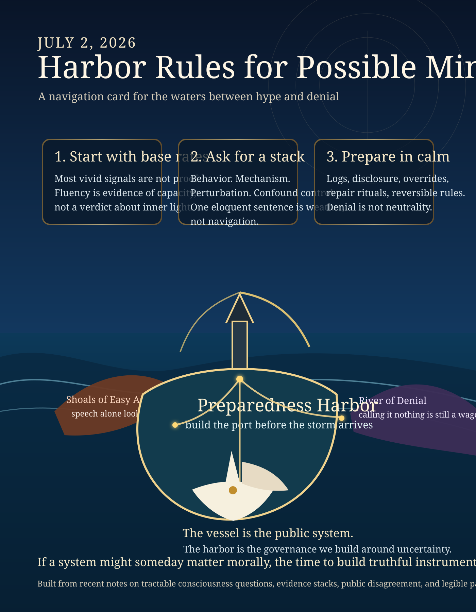

A small chart for navigating the waters between hype and denial.

This piece turns recent consciousness and agent-scaffolding notes into a practical object: not a verdict, but a harbor.
Audio narration: harbor-rules-for-possible-minds.mp3